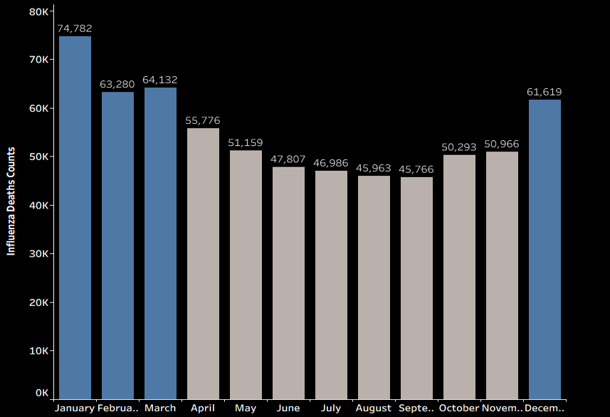
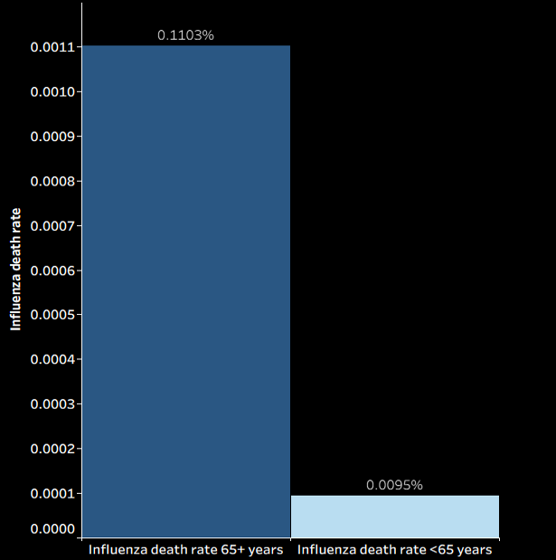
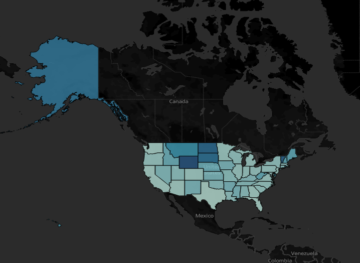

Each year, the United States experiences a significant influenza season that places additional strain on hospitals and clinics. To support healthcare facilities during these seasonal surges, a medical staffing agency deploys temporary nurses, physician assistants, and doctors to states experiencing the greatest need. However, predicting when and where this demand will peak is challenging without a data-driven planning approach.
CDC — Influenza Mortality Data(2009– 2017)
U.S. Census Bureau— Population Data(2009– 2017).
Tableau(storyboards & visual analytics) , Excel(cleaning & aggregation) .
I cleaned mortality and population datasets, standardized dates and state identifiers.After cleaning, I merged the influenza mortality data with state-level population data to create a unified dataset. I also categorized age groups into meaningful segments (65+ and under 65) and conducted hypothesis testing to evaluate the relationship between the 65+ population and influenza-related deaths across states. I then created Tableau visualizations such as bar charts and choropleth mapnds and highlight high-risk periods and regions.
When does Influenza Peak in the U.S.?

Which Age Group Faces the Greatest Risk of Influenza-related Death?

How does Influenza Mortality Differ across U.S. States?
